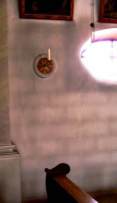
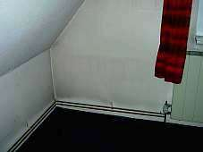
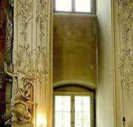
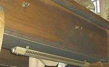
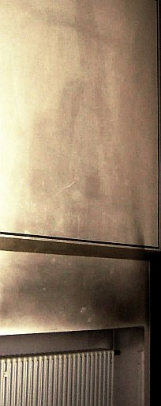

Weitere Datenübertragung Ihres Webseitenbesuchs an Google durch ein Opt-Out-Cookie stoppen - Klick!
Stop transferring your visit data to Google by a Opt-Out-Cookie - click!: Stop Google Analytics
Cookie Info. Datenschutzerklärung


 Konrad Fischer's Homepage: Restoration, Preservation and Refurbishing of the Old Building and Patrimonial Monument
Konrad Fischer's Homepage: Restoration, Preservation and Refurbishing of the Old Building and Patrimonial Monument
Table of contents - Sitemap - over 1.500 print pages with independent building information
Die Huellflaechentemperierung - Richtig und falsch heizen - the complete german version about the topic of this page
 Restoration of old buildings, conservation of monuments - Tips and Tricks +++ Mold attack - What to do? A Guide
Restoration of old buildings, conservation of monuments - Tips and Tricks +++ Mold attack - What to do? A Guide 
Rising Damp - A Fake? +++ Low-cost Repair, Renovation + Refurbishing of your old House
Traditional Craftmanship in Modern Mortars – Does it work in practice?
Altbauten kostengünstig sanieren:
Heiße Tipps gegen Sanierpfusch im bestimmt frechsten Baubuch aller Zeiten (PDF eBook + Druckversion)

The Room Surface / Room Envelope Heating System 1
Properly or Risky Heating
Building conservation and the perfect indoor climate without HVAC-Systems
Sustainable interior room surface / building structure heating via IR-radiating heat
Radiator / Convector Heater / Infrared Radiation & Convectional Heating Systems - Pros & Cons
by Konrad Fischer
This page is dedicated to one of the biggest problem in modern buildings and building conservation - the indoor environment climate and
the stress on every part of the building: the users and their health, the hygienic conditions of the room air, the deterioration
of the room's envelopes, the wall surface including paintings at the walls and all other parts of maybe historical worthful furniture and
fine arts stored or exposed in the indoor situation. So we will discuss the heat transfer techniques, the energy
consumption the building physics under hygienical, conservational and economical aspects. The heating and airing technique of normal
living rooms as well as rooms in the church, the castle, the museum and storage rooms like cellars or in magazines are the topics of
our discussion here. Is there an better alternative for usual convectional heating, air ventilation and air conditioning systems?
Let's start with an updated article, first published in the german magazine 'Raum & Zeit' (No. 145 - 2007):
Convectional Heating Or Infrared Radiating Heating Technique?
A report from the experience with 'temperating' heating systems
Reading the article by Prof. Claus Meier ('Heating like the sun', Raum & Zeit 144 (2006), and 'The Benefits of
IR-radiating heat', Raum & Zeit 145 (2007)) many got astonished. Could it be that all the other experts of heating, indoor climate and building
physics are wrong?
The same I asked myself as an architect for preservation, conservation and refurbishing of historic buildings since
the bavarian conservator for museums Henning Grosseschmidt (Centre for the Non-state Museums in
Bavaria - Landesstelle für Nichtstaatliche Museen, Munich) in the 1980s begun to suggest a new method of heating
system by an interior room surface heating via infrared (IR) radiating heat ("Huellflaechen-Temperierung"). This new system will
provide an uniform temperature for the cooling building envelopes at the interior walls, roof and floor, to get the required
temperature for the room's use and the needs of the exposed museum objects as well. The conservative goal of this
heating method is to keep all envelope parts and room objects at safe conditions and safeguard a healty room atmosphere for human beings.
Otherwise this heating system can be adapted as component warming system for the interior surface of cooling envelope parts or partially warming
of certain objects like an church organ and other instruments, fine art objects etc to avoid the risks by condensate
from warmer damp air at the surface of the object.
The system works in a tempered room with the radiant heat emitted from the warm interior room surface. In the case of partially
heating of building structures or objects these can be warmed by a nearby warmth-radiating water pipe, an electrical
heating wire or a heated surface of a radiator made from metal, stone, glass, card board etc. depending of the local needs. The various methods combined with their
carefully adjusted control and monitoring help to consider the preservational objectivs and purposes without any
harmful means of safeguarding and protection. This heating system contradicts both the technical requirements of modern heating
systems as well as the operation of heating systems like usual radiators, convectors and air heating systems by
usual means (radiators, convectors, vents). The common heating system mainly uses the covectionally heated room air.
So the damp heated air with more or less high relative humidity is touching the systematically cooler surfaces of the rooms envelope, wetting them up by condensate
and loading there dirty dust. By controlled diminishing the heating temperature (night setback) the room envelopes
cool again every night and will so suck up more and more condensate if heating starts again the following morning.
Some photos from dusted walls by hot air heating shall illustrate the problem:

<== Dusted wall and ceiling in a church by convectionally air heating

<== Dirty wall in a living room by convector heating and usual night setback

<== Dusted interiors of a church by convectionally working seat heating system

<== Dust-spreading electric church seat heating
 <== Dirty wall by underfloor heating
<== Dirty wall by underfloor heating
 <== Dirty wall by heating pipes
<== Dirty wall by heating pipes
 <== Moldy organ interior by air heating system
<== Moldy organ interior by air heating system

<== Dust and dirt above the convector / radiator heating
The first system the conservator recommended intended to temperate the room's envelope by adding heated layers to
the room envelope:
- A plasterboard layer to the external walls with internally circulating convectionally heated air and
- an air heated shell structure on the floor by adding a new floor layer with underfloor heating pipes.
Small conventors as in base board heating systems are heating the internal air in the gap between the closed wall coating - made by card
board layer and also between the floor and the floor layer structure. The hot air buoyancy warmed up the the front layer surface
indirectly from behind and following the whole room. The mild and tender heat radiation, which became irradiated from the warm layer
surface constantly during day and night does not stress the sensitive historical exhibits of the museum by humidity and temperature
fluctuations / changes so much as the operating of usual heating systems would have done by heated air.
The severe consequences and interventions caused by this method for the mostly patrimonial monuments and their
historical equipment like plastered, painted and decorated walls or the old floor layers itself, however,
had been considered (too?) less. Ultimately, because of the high investments needed the idea was only implemented in a
small range, mostly museums in dependance from the grants the conservator could give.
But taking an active part in the upcoming conflicts between museum interest and the conservation of the original
historical building shape I began to increase my interest for the theory and practice of radiation heating. It was quite
easily to understand the huge risks of convectionally heating watching all the severe damages everywhere - in patrimonial
buildings even as in 'normal' houses.
Continue - The Room Surface / Room Envelope Heating System 2
Altbau und Denkmalpflege Informationen Startseite
Questions / Consultation?